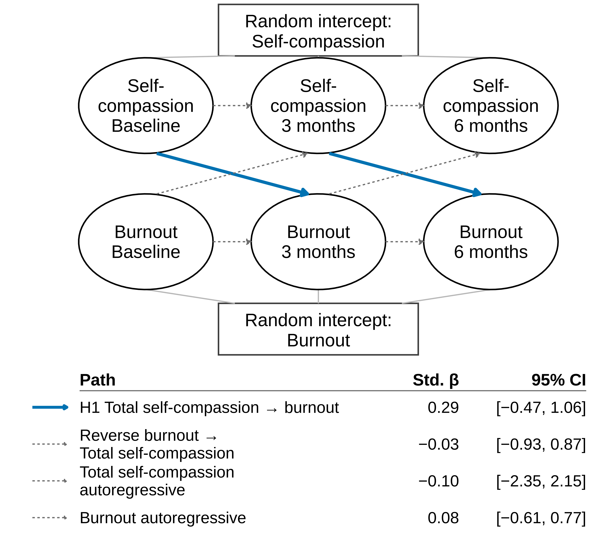
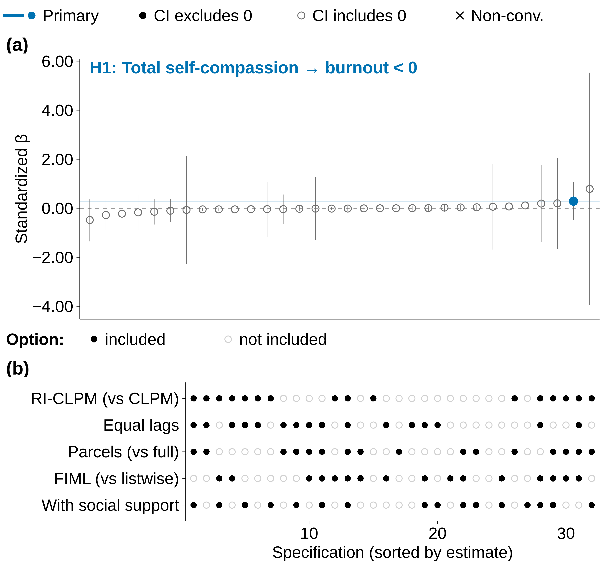

← Publication page · mjmonnot.github.io
Burnout in sports coaching · Research companion
Self-compassionate coaches are less burned out. A coach becoming more self-compassionate was not reliably followed by less burnout.
A secondary analysis of an open panel of 422 Swiss sports coaches surveyed three times over six months (Ackeret et al., 2022). It separates two questions that are usually mixed together: whether more self-compassionate coaches are less burned out, and whether a coach’s burnout falls after that coach becomes more self-compassionate than usual. The answer to the first was yes. The second could not be shown.
Three findings
- Sports coaches who were more self-compassionate (kinder to themselves when things go wrong) reported less burnout than coaches who were less so.
- Within the same coach, though, a period of higher-than-usual self-compassion was not reliably followed by lower burnout three months later. The estimate was too uncertain to call in all 32 versions of the analysis.
- The study surveyed 422 Swiss coaches up to three times over six months, and fewer answered the later surveys. It shows which coaches are less burned out, not that raising a coach’s self-compassion would lower burnout.
At a glance
What this means in practice
The decision
Should a federation, club, or employer pay for self-compassion training to prevent coach burnout?
Not on this evidence. A training program is paid to change people. This study shows that self-compassionate coaches are less burned out. It could not show that a coach who becomes more self-compassionate ends up less burned out, and that is the claim a program rests on.
What you can use now
- Burnout is higher, on average, among less self-compassionate coaches. That tells you where burnout is more common. It does not tell you what will reduce it.
- Keep burnout itself on the dashboard. Whatever you try, judge it by whether burnout moves.
What to hold off on
- Buying or mandating a self-compassion program on the promise that it lowers burnout.
- Treating “self-compassionate people are less burned out” in a proposal as proof that the training works. That sentence is the first finding here, and it is not that proof.
If you run a program anyway
- Measure burnout before and after, and keep a comparison group. A wait-list is enough.
- Measure self-criticism and self-kindness separately, so you can see which one moved.
- Check more often than every three months. Change that plays out over weeks would be invisible to a design like this one.
These points follow the paper’s Practical Implications and Future Directions sections. The study tested no program, so it does not show that self-compassion training fails. It shows that the case for it has not yet been made in coaches. The coaches were Swiss and only about one in five was a woman. To talk through what this means for your own organization: matt@vocentive.com.
For writers and editors
Sports coaches who are more self-compassionate are less burned out, but in a six-month study of 422 Swiss coaches, a coach becoming more self-compassionate than usual was not reliably followed by lower burnout.
- Kind of study
- Observational. The same coaches filled in questionnaires up to three times, three months apart. Nobody was given training or assigned to a group.
- Status
- Preprint on Preprints.org, November 2026. It has not been peer reviewed.
- Data
- A new analysis of data that other researchers collected and shared openly (Ackeret et al., 2022). The author of this paper did not collect the data.
- Who was studied
- 422 sports coaches in Switzerland from 57 sports. 20.7% were women and the average age was about 44.
- Funding and interests
- No specific funding and no conflicts of interest declared. The paper discloses the use of AI tools in drafting text and checking statistics.
The study supports
- “More self-compassionate coaches reported less burnout.”Correlation of −.48. In round terms, 74 of 100 versus 26 of 100 (section 2).
- “The study could not show that a rise in a coach’s self-compassion is followed by a drop in burnout.”Estimate 0.29, with a 95% interval from −0.47 to 1.06.
- “The case for self-compassion training to prevent coach burnout has not yet been made.”The paper’s own conclusion.
It does not support
- “Self-compassion prevents burnout.”Nothing was changed on purpose, so cause cannot be read off.
- “Self-compassion training does not work.”No training was tested.
- “Self-compassion makes burnout worse.”The main estimate is above zero, but its interval runs well below zero too.
- “This holds for all coaches,” or for employees in general.Swiss coaches, about one in five of them women.
Monnot, M. J. (2026). Does self-compassion precede lower burnout in sports coaches? A within-person panel study. Preprints.org. https://doi.org/10.20944/preprints202611.0474.v1
Questions, or a quote: Matthew J. Monnot, matt@vocentive.com.
1 · Two questions that look like one
“Self-compassion goes with less burnout” can mean two different things. Most published evidence answers the first. A program that teaches self-compassion to prevent burnout depends on the second. Switch between them.
2 · How strong is the difference between coaches?
Split coaches at the midpoint on each measure: a more and a less self-compassionate half, and a more and a less burned-out half. If self-compassion had nothing to do with burnout, 50 of every 100 coaches in the more self-compassionate half would land in the less-burned-out half.
Of 100 coaches in the more self-compassionate half, about 74 were in the less-burned-out half.
A correlation of −.48 means the halves line up about 74 times in 100 for the more self-compassionate group and about 26 times in 100 for the less self-compassionate group. Each dot is one of 100 coaches.
3 · Read one estimate at a time
Each row is a published estimate of how one thing at one survey related to another thing at the next survey, within the same coach. The dot is the estimate and the line is its 95% interval. Zero means no link. When a line crosses zero, the data cannot tell which direction the link runs, or whether there is one.
4 · Six months, three surveys
- Baseline420 coaches answered questionnaires on self-compassion, burnout, and social support
- 3 months301 coaches answered again
- 6 months259 coaches answered a third time; 258 took part in all three
5 · What the study found, in order
- More self-compassionate coaches were less burned out. Coaches’ stable levels of self-compassion and burnout correlated r = −.48, 95% CI [−.60, −.37]. This repeats what earlier work on the same panel reported.
- A rise in a coach’s own self-compassion was not reliably followed by lower burnout. The prediction was a negative path. The estimate was 0.29, 95% CI [−0.47, 1.06], from baseline to 3 months, and 0.14, 95% CI [−0.13, 0.41], from 3 to 6 months. Both intervals include zero.
- The reverse was not shown either. Higher-than-usual burnout was not reliably followed by lower self-compassion (−0.03, 95% CI [−0.93, 0.87]).
- Social support leaned protective but did not settle. Higher-than-usual perceived support was followed by an estimated −0.27 on later burnout, with an interval from −0.63 to 0.09.
- Splitting self-compassion into its kind and self-critical halves did not single out a target. These models were added after the analysis plan was frozen and are exploratory. Both intervals were wide and included zero, and that model reported an estimation problem.
- The answer did not depend on one analytic choice. Across 32 versions of the analysis that varied five choices, every interval for the within-coach path included zero.
- The questionnaires behaved the same way at each survey. The measurement checks needed to compare a coach with themselves over time held for burnout and social support, and held for self-compassion after one item was allowed to differ.
- What follows. The paper concludes that self-compassion is not yet established as a target for burnout-prevention trials in coaches. That is a statement about missing evidence, not evidence that such training cannot work.
6 · The paper’s figures, with a reading guide


For specialists
The design, model, and every reported estimate in one place. Estimates are standardized with 95% confidence intervals; where two are given, the first is baseline to 3 months and the second is 3 to 6 months.
| Design | Three-wave panel with 3-month lags; secondary analysis of a CC0 deposit (Ackeret et al., 2022; Dryad 10.5061/dryad.p5hqbzkrk). Two prior studies used the same panel with different questions and models. |
|---|---|
| Sample | N = 422 analytic; 420, 301, and 259 by wave; 258 with all three waves. 20.7% women, Mage = 44.48 (SD = 11.03), 57 sport disciplines. |
| Measures | Self-Compassion Scale Short Form (12 items), Coach Burnout Questionnaire (15 items), Brief Perceived Social Support Questionnaire. Each construct modeled with three parcels per wave. |
| Model | Random-intercept cross-lagged panel model with latent constructs. Autoregressive and cross-lagged paths constrained equal across intervals (unstandardized), as planned; equal versus free: Δχ²(4) = 12.15 (Satorra–Bentler scaled), ΔCFI = −.001, ΔRMSEA = .002. |
| Estimation | R 4.5.2, lavaan 0.6.17; robust maximum likelihood (MLR); full-information maximum likelihood under missing at random. |
| Fit, primary model | χ²(121) = 149.41, CFI = .994, RMSEA = .027, 90% CI [.000, .043], SRMR = .044. |
| Invariance | Criteria: ΔCFI ≤ .010 with ΔRMSEA ≤ .015. Scalar invariance held for burnout and social support; partial scalar for self-compassion after one parcel intercept was freed. |
| Hypothesis 1 | Self-compassion → later burnout, within person: β = 0.29 [−0.47, 1.06]; 0.14 [−0.13, 0.41]. |
| Reverse path | Burnout → later self-compassion: β = −0.03 [−0.93, 0.87]; −0.02 [−0.51, 0.48]. |
| Between person | Random-intercept correlation, self-compassion with burnout: r = −.48 [−.60, −.37]. |
| Hypothesis 2 | Social support → later burnout (separate model): β = −0.27 [−0.63, 0.09]; −0.28 [−0.70, 0.14]. Burnout → later support: −0.44 [−0.81, −0.06]; −0.50 [−1.10, 0.09]; no hypothesis was stated for this path. |
| Planned checks | Traditional cross-lagged model −0.04 [−0.11, 0.02]; observed scores −0.14 [−0.32, 0.04]; complete cases −0.27 [−0.90, 0.35]; unconstrained lags 0.20 [−1.66, 2.06]. |
| Specification curve | 32 specifications from five binary choices: random intercepts or not, lagged paths free or equal, parcels or full scale, full-information or listwise, social-support covariance in or out. All 32 intervals include 0. |
| Exploratory | Compassionate and uncompassionate self-responding as separate factors, specified after the plan was frozen: uncompassionate → burnout 0.01 [−0.72, 0.73]; compassionate → burnout 0.41 [−0.49, 1.32]. Improper solution (negative variance estimate); reported as estimated, not respecified. |
| Plan and deviations | Analysis plan frozen 24 October 2026 under version control; not registered. Deviations: estimates with intervals reported in place of p values and the planned Holm correction; dynamic fit index cutoffs not computed; Bayesian sensitivity model not run; self-compassion left out of the Hypothesis 2 model. Full list in the preprint’s appendix. |
| Materials | Data: original deposit on Dryad. Code and frozen plan: from the author on request. Reporting follows JARS-Quant. |
What this site does and does not show
- No respondent-level data are hosted here; every number on this page is a published aggregate from the preprint.
- The coaches were recruited in Switzerland, women were underrepresented, and coaches with higher burnout may have been less likely to take part.
- The “74 of 100” display in section 2 is a translation of the correlation (binomial effect size display; Rosenthal & Rubin, 1982), not a count from the data. The diagram in section 1 is an illustration.
- No intervention is evaluated. Three surveys three months apart cannot show what happens over weeks, and they cannot show what a training program would do.
Tools used
R (lavaan); HTML, CSS, and JavaScript.